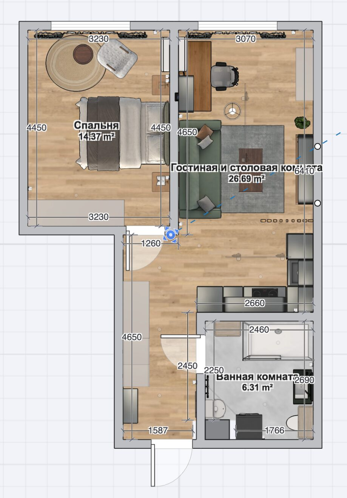
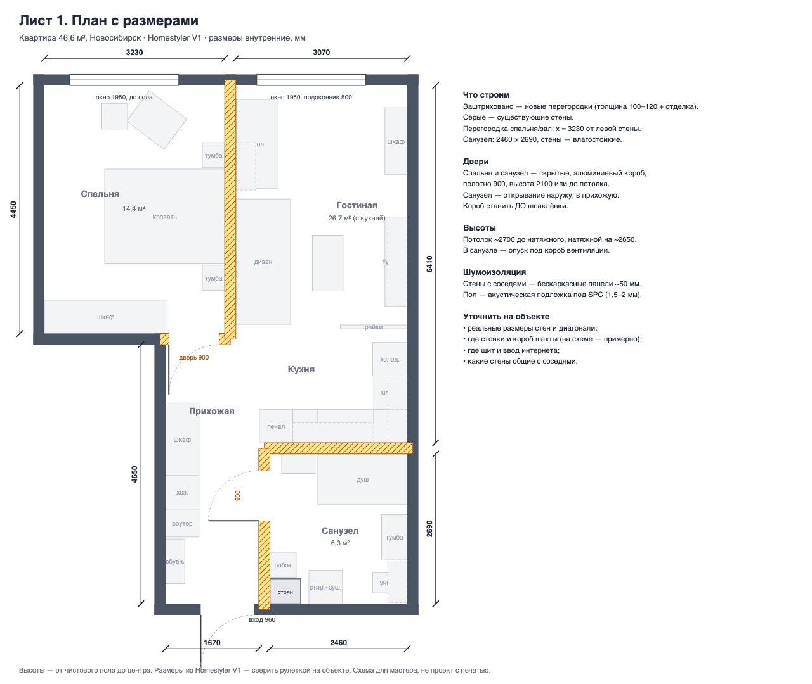
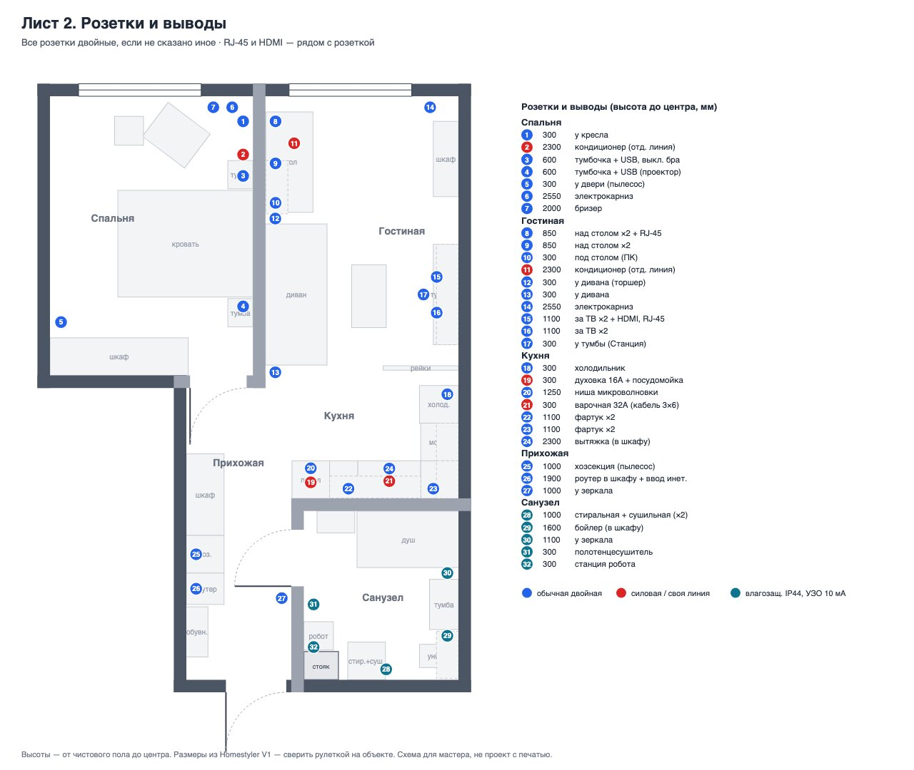
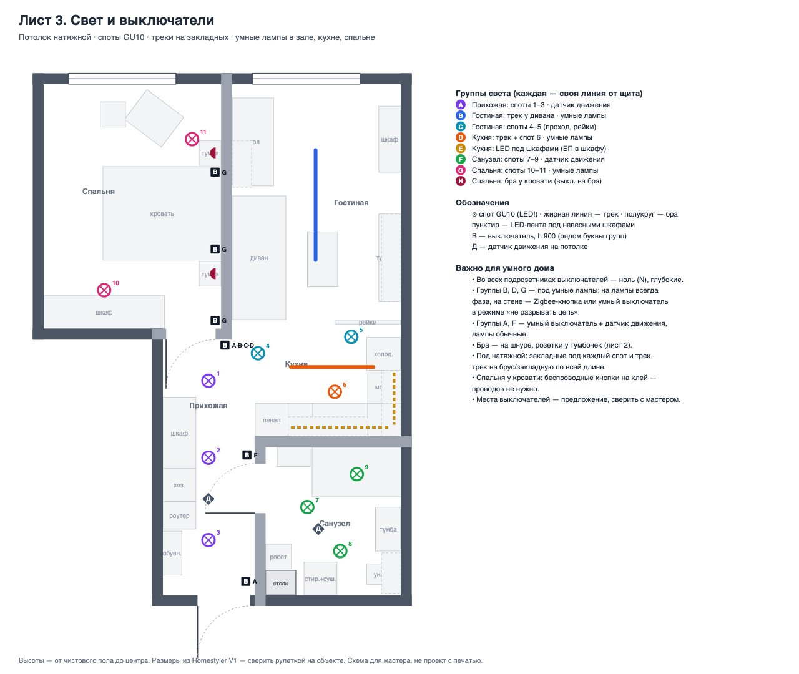
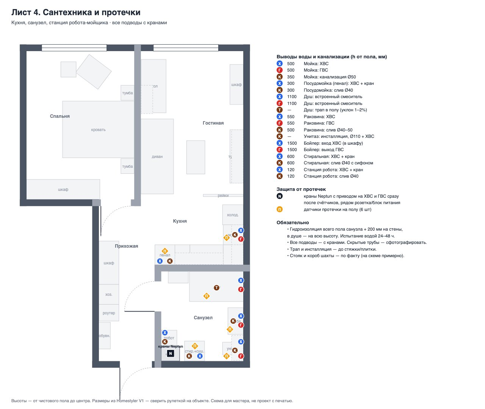
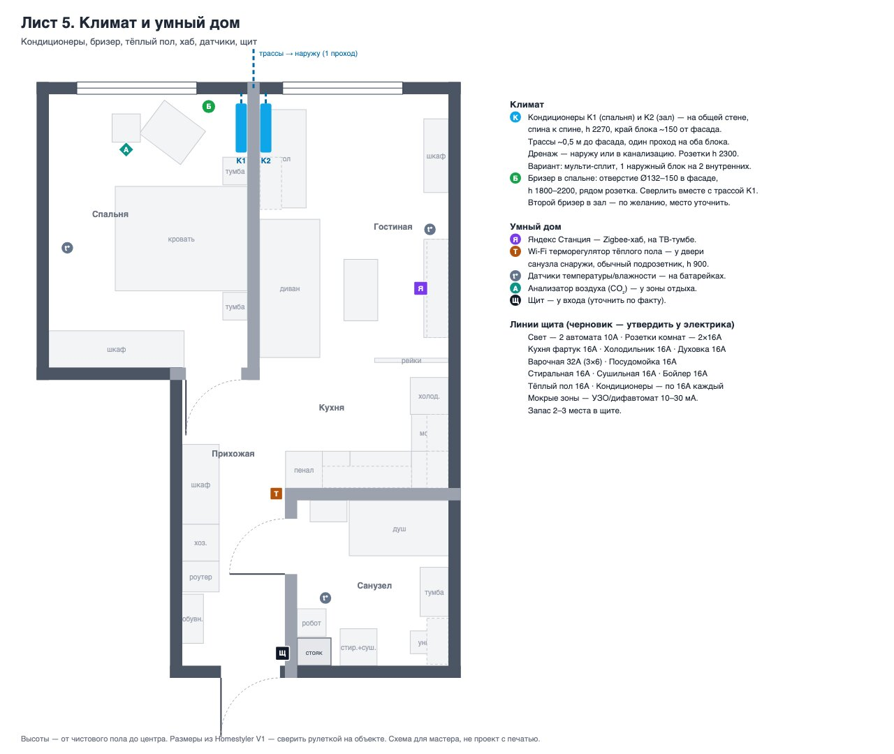

Комнаты
Картинки из программы для дизайна. Цвета и мебель — как задумано, в жизни будет чуть иначе.
Спальня 14,4 м²
Кровать 160 стоит изголовьем к оливковой стене, по бокам тумбочки и бра. У окна — кресло и столик. Шкаф до потолка у двери. Телевизора нет: проектор стоит на тумбочке и показывает на белую стену напротив кровати. Шторы плотные, на электрокарнизе — открываются сами утром.


Гостиная 26,7 м² вместе с кухней
Диван цвета шалфея, перед ним журнальный стол, который поднимается и становится обеденным. Телевизор на стене, под ним подвесная тумба. У окна рабочее место — кондиционер дует вдоль стены, а не в спину. Кухню от комнаты отделяют деревянные рейки до потолка.


Кухня
Графитовые фасады, тёмная столешница. В высоком шкафу-пенале — духовка, посудомойка и микроволновка. Индукционная плита, вытяжка спрятана в шкаф. Холодильник у реек.

Прихожая
Вдоль стены шкаф до потолка: одежда, отдельная секция для пылесоса и гладильной доски, и полка для роутера. Обувница и большое зеркало. Двери в спальню и санузел скрытые — без наличников, в цвет стены.


Санузел 6,3 м²
Душ без поддона — слив прямо в полу, стеклянная перегородка. Подвесной унитаз, тумба с раковиной. Стиральная и сушильная машины стоят друг на друге. Плоский бойлер спрятан в шкаф над унитазом. Пол с подогревом, полотенцесушитель, робот-мойщик полов со своей станцией.


Покрутить в 3D
Стены, окна и двери в реальных размерах. Мебель можно включить — она показана простыми блоками.
Крутить — пальцем или мышью, приблизить — двумя пальцами или колёсиком.
Схемы для мастера
Где розетки, свет, вода и кондиционеры. Нажмите на схему, чтобы открыть крупно.






Как будет устроено
Коротко о том, что в квартире будет работать само.
Тёплый пол
Электрический мат под плиткой в санузле. Регулятор с Wi-Fi у двери: можно включить с телефона или по расписанию — например, утром на час.
Если протечёт
На полу под стиралкой, раковиной, мойкой и у душа лежат датчики. Если намокнет — краны на входе воды закроются сами, на телефон придёт сообщение. Соседей не зальёт.
Свет и шторы
Всё слушается Алису. В прихожей и санузле свет включается сам, когда заходишь, а ночью горит тускло. Утром шторы открываются и свет плавно разгорается.
Воздух
В каждой комнате кондиционер. В спальне бризер — тихо подаёт уличный воздух через фильтр и подогревает его, окно открывать не нужно. Датчик показывает, когда душно.
Тишина
Стены, общие с соседями, закрыты шумоизоляцией, под полом звукопоглощающая подложка.
Что покупаем
Выбрано на Яндекс Маркете — с хорошим рейтингом и большим числом отзывов. Цены на момент выбора, ссылки кликабельные. Бледным — то, что уже есть.
Спальня 12
- Кровать 160×200 (габарит ~170×215), с мягким изголовьемНАСЛАДА, бежевая, на высоких ножках, подъёмник — 24 491 ₽, ★4.9 (683), 2,4K купили, габарит 170×215 — точно в планЗапасной вариант: Босс, велюр латте — 27 954 ₽, ★4.7 (761), 172×218
- Матрас 160×200Askona Comfort Optima — 11 902 ₽, ★4.8 (10,9K)Запасной вариант: Devison Spring Orto — 12 047 ₽, ★4.8 (18,1K)
- Тумбочки 2 шт., ~45×40×47, дубмассив берёзы, реечный фасад, 40×30×50 — 11 201 ₽/шт, ★5.0 (44), 756 купили — рейки как у перегородкиЗапасной вариант: Hoff SCANDICA Хортен 41×45×40 — 3 976 ₽, ★4.9 (55), 304 купили
- Шкаф 220×60×268, до потолка готовый: Уютная логика 160×260×50 — ★4.7–4.8 (800+ оценок серия) + Уютная логика 60×260×50 с ящиком — = 220 см · или одним: 225×260×50 — если в нишу влезает 225
- Бра у кровати 2 шт.Maple Lamp WL-26, чёрный металл + дерево, с выключателем — 2 142 ₽/шт, ★4.8 (55), 328 купилиЗапасной вариант: Marseille LED, USB — 1 498 ₽, ★4.7 (2,7K)
- Кресло у окна, ~68×84×76, букле/дубTeddy, букле шалфей, деревянный каркас — 5 504 ₽, ★4.8 (63) — компактное 56×55Запасной вариант: PLAYWOODS Hush Relax, букле — 21 250 ₽, ★4.7 (13), крупнее
- Столик кофейный круглый Ø45, h 42EDWOOD S02, массив, светлый дуб, 40×40×50 — 3 818 ₽, ★4.8 (291), 644 купили
- Ковёр круглый/овальный ~140Bilbao BL26 Ø160, кремовый, рельефный — 5 893 ₽, ★4.9 (1K)Запасной вариант: джутовый Ø150 — 10 166 ₽, ★4.9 (412)
- Шторы блэкаут, ширина ~260, h 265Guten Morgen «Рогожка» бежевый шале, 2×200×270 — 3 813 ₽, ★4.8 (линейка 800+ оценок); подшить до 265
- Электрокарниз 2,6 мRAYOS, Wi-Fi, регулируемая длина — ~8 000 ₽, ★4.8 (108) — проверить работу с Алисой
- Проектор настольный (на тумбочку, картинка на белую стену)JIN TU X4, Real Full HD, 300 ANSI, Android — 11 153 ₽, ★4.8 (1,4K)Запасной вариант: SHAKACHU C50, Full HD, автофокус — 23 634 ₽, ★4.9 (119). Нужна автокоррекция трапеции — стоит сбоку
- КондиционерiFFALCON IF-CLTB09INV, инвертор, Wi-Fi — 18 429 ₽, ★4.9 (943)Запасной вариант: TCL TAC-CT09INV/R — 27 998 ₽, ★4.8 (1,4K); мульти-сплит — уточнить у монтажника
Зал 18
- Диван 225×98, шалфей/оливаFORREST Сканди 220×97×92, тик-так, деревянные ножки — 43 099 ₽, ★4.9 (42), магазин ★4.7; есть цвета зелёный/бежевыйЗапасной вариант: Финка, минимализм, зелёный — 27 376 ₽, ★4.7 (648)
- Журнальный стол-трансформер (подъёмная столешница), ~100×55AMI Лофт, трансформер 60×60 → 120×80, подъём — 9 164 ₽, ★4.7 (1K), 3,2K купили; выбрать цвет под дуб
- Стулья для гостей 2 шт., складныеФанераФан, складной, дерево без покраски — 1 946 ₽/шт, ★4.8 (93), 763 купили
Рабочий стол 160×75×75есть свойОфисное креслопока не нужно- Навесной шкаф над столом 85×35×75 (рядом с кондиционером) навесной горизонтальный 80 см, Frenesie Лофт ВГ800 — 4 506 ₽, ★5.0 (43) — выбрать белый
- Телевизор 55"TCL 55" Q6CS QD-Mini LED, Google TV — 48 081 ₽, ★4.8 (3,6K)
- ТВ-тумба подвесная 160×40×45, дуб/ротангPOINT 30, дуб вотан, 160×40×30 — 8 837 ₽, ★4.8 (96), 300 купили
- Навесной шкаф над ТВ 160×35×55 2 × Frenesie ВГ800, 80 см — ≈9 000 ₽ за пару
- Шкаф 120×40×до потолка у окна, правая стенаготовый: Уютная логика 120×260×50 — 18 543 ₽, ★4.7 (805) — глубина 50 вместо 40
- Рейки-перегородка дуб, 120×270не продаётся готовой нигде нормально. Делаем сами: 15 шт. брусок строганый 40×40×3000, Леруа (лучше сорт «Экстра», без сучков, ~400–740 ₽/шт) + масло с тоном «дуб» + крепёж к полу и закладной в потолке; шаг 40 мм. МДФ-рейки 16×40 для отдельностоящей перегородки слишком хлипкие
- Ковёр 200×160безворсовый 160×230, Фабрика Белка, серо-бежевый — 4 967 ₽, ★4.8 (847), 2,1K купили
- ТоршерRivoli Anda, абажур из джута, дерево, полки, 148 см — 4 684 ₽, ★4.8 (2,4K), 11K купили
- Шторы, ширина ~230, h 265те же Guten Morgen «Рогожка» — 3 813 ₽
- Электрокарниз 2,3 мRAYOS, Wi-Fi, регулируемая длина — ~7 200 ₽, ★4.8 (108)
- КондиционерiFFALCON IF-CLTB09INV, инвертор, Wi-Fi — 18 429 ₽, ★4.9 (943)Запасной вариант: TCL TAC-CT09INV/R — 27 998 ₽, ★4.8 (1,4K); мульти-сплит — уточнить у монтажника
- Картина/постер ~80×100ссылка:
- Растение в кашпоссылка:
Кухня 10
- Кухонный гарнитур графит матовый : нижние 45 + 100 (под варку) + угол 60 + 60 (мойка); пенал 60 под технику; навесные 145 + 60 + 60, над холодильником 60×70ссылка:
- Холодильник 60×62×195, двухкамерныйComfee RCB449WH1R, Full No Frost, 353 л — 29 489 ₽, ★4.8 (6,3K) — сверить высоту с нишей под шкаф 60×70
- Духовой шкаф встраиваемый 60Weissgauff EOM 306 Black Edition, конвекция, гриль — 21 590 ₽, ★4.8 (2,4K)
- Посудомойка компактная встраиваемая 60×45 (h)компактных встраиваемых 60×45 с хорошими оценками нет → вариант: узкая 45 см под столешницу на место ящика 45: Comfee CDWI450, 9 компл. — 18 990 ₽, ★4.8 (3,2K)
Микроволновка встраиваемая 60×38–45есть своя — если она отдельностоящая, в пенале нужна ниша-полка 60 с зазорами для вентиляции- Варочная панель индукционная 60Comfee CIH601, индукция, инвертор — 8 488 ₽, ★4.8 (3K)Запасной вариант: Weissgauff HI 640 BA — 12 428 ₽, ★4.8 (577)
- Вытяжка встраиваемая в шкаф 60Hansa OTP6651BGH, телескопическая — 7 676 ₽, ★4.8 (428)Запасной вариант: DeLonghi KT-ARIA 606 NB — 5 063 ₽, ★4.9 (262)
- Мойка 55 (чёрная)Domaci Болонья 50×50, искусственный камень, чёрная — 4 163 ₽, ★4.9 (208)
- СмесительPragma Melpul, матовый чёрный, выдвижной излив — 6 918 ₽, ★4.8 (222)
- LED-подсветка под шкафы ~1,8 м + профильлента LTC COB 24 В, 4000K, 5 м — 1 783 ₽, ★4.9 (143) + профиль и блок питания 24 В
Прихожая 6
- Шкаф 240×60×268 : одежда 130 + хозсекция 60 + секция 50 под роутерготовый: Уютная логика 180×260×50 с ящиками (одежда) — + 60×260×50 (хозсекция: пылесос, гладильная доска) — = 240 см; роутер — на верхнюю полку 60-го модуля, розетку перенести туда
- Обувница 80×35×50«Урана» графит, 88×28×85, 4 542 ₽ (выше плана — проверить место)
- Зеркало 60×180TODA ALMA 180×60, чёрная рама, 7 619 ₽
- РоутерTP-Link Archer AX55, Wi-Fi 6 — 6 197 ₽, ★4.9 (544) — либо роутер провайдера
- Ручной моющий пылесосRoborock F25 LT Gen2 — 25 990 ₽, ★4.9 (2K)Запасной вариант: Midea VSS1200 — 12 498 ₽, ★4.7 (14,6K)
- Встроенная выдвижная гладильная доска в ящик 60 (Ironfix и аналоги)встраиваемая выдвижная доска — 8 285 ₽, ★4.7 (32) — оценок мало, Hettich Ironfix надёжнее (через мебельщика)
Санузел 16
- Душевое ограждение 160×90, стеклоперегородка walk-in 900×2000, чёрный профиль, стекло 8 мм — 11 231 ₽, ★4.7 (295)Запасной вариант: Ulitka Walk In Premier 90×195 — 16 256 ₽, ★4.9 (140)
- Трап/лоток для душа или поддонAM.PM PrimeFlow 70 см, сухой затвор — 6 165 ₽, ★4.7 (464)
- Душевая система (лейка + термостат)ESKO Line, термостат, чёрная — 21 631 ₽, ★4.7 (169)Запасной вариант: нерж. сталь, чёрная, тропический душ — 17 251 ₽, ★4.8 (275) — без термостата?
- Тумба с раковиной 80 + зеркальный шкаф (на заказ или готовая)Teymi Laina 80, светлый дуб, подвесная — 14 907 ₽, ★4.8 (361); зеркальный шкаф — на заказ/подобрать в цвет
- Смеситель для раковиныPragma Teiden, матовый чёрный — 4 840 ₽, ★4.8 (297)
- Унитаз подвеснойPragma Nanta, безободковый — 8 321 ₽, ★4.8 (379) · или комплект 7-в-1: Teymi Lina + инсталляция + кнопка — 17 105 ₽, ★4.8 (342)
- Инсталляция + кнопкаинсталляция с кнопкой (матовое серебро) — 11 783 ₽, ★4.9 (64) — или взять комплект Teymi выше
- Бойлер плоский ~50 лElectrolux Centurio IQ 3.0, 50 л — 22 500 ₽, ★4.7 (184) — проверить габарит под шкаф 75×35×120
- Стиральная машина 60Weissgauff WM 48128 Inverter Steam, 8 кг — 30 753 ₽, ★4.8 (1,3K)
- Сушильная машина 60Weissgauff WD 6128 B Heat Pump, 8 кг — 41 225 ₽, ★4.9 (448) — та же марка, комплект для колонны подойдёт
- Комплект для установки в колоннуWeissgauff WSK 11300 — 5 559 ₽, ★4.6 (100) — под машины Weissgauff
- Полотенцесушитель электрический ~50×95, чёрныйEnergy Round Modus 800×500, чёрный, с полкой — 8 988 ₽, ★4.8 (169)Запасной вариант: лесенка 500×600, чёрный матовый — 8 406 ₽, ★4.9 (373)
- Пенал 60×35×200Runo 50, напольный пенал, белый — 13 324 ₽, ★4.7 (111)
- Шкаф над унитазом под бойлер 75×35×120 навесной шкаф Runo Парма 60, белый — 7 053 ₽, ★4.8 (76) — проверить, влезет ли бойлер; иначе каркас из ЛДСП у мастера
- Робот-мойщик со станцией (подключение к воде и сливу)Dreame L50 Ultra CE — 48 484 ₽, ★4.9 (203) + модуль воды и слива Dreame RAW7 — подключение к водопроводу/канализации; проверить совместимость с L50 в карточке
- Тёплый пол электрический + терморегуляторТеплософт Профи 3 м², 450 Вт, с терморегулятором — 2 486 ₽, ★4.8 (466)
Свет 2
- Споты встраиваемые ~11 шт.Maytoni Atom DL024-2-01B, чёрный, GU10 — 672 ₽/шт, ★4.9 (67) + лампы GU10 3000–4000K
- Трековая система: шинопровод 2 м + 1,5 м, светильники 4+ шт.Camelion, комплект 4×GU10 + шинопровод, чёрный — 1 823 ₽, ★4.8 (103); под натяжной потолок лучше встроенный магнитный трек — у потолочников
Двери 1
- Скрытые двери 2 шт. (спальня, санузел), под покраску, с коробомна Маркете нормальных с отзывами нет — заказывать у фабрики/дилера (Profil Doors Invisible, Софья, Волховец) вместе с монтажом
Умный дом (Алиса, Zigbee) 9
- Хаб + колонкаЯндекс Станция Миди с Zigbee — 15 515 ₽, ★5.0 (76) — центр всего умного дома
- Умные выключатели (свет, споты по зонам) ~6 шт.Яндекс YNDX-00531, Zigbee — 2 162 ₽, ★4.8 (198); есть 2-клавишные
- Датчики движения (прихожая, санузелсвет сам) ×2 — Яндекс YNDX-00528, Zigbee — 1 132 ₽, ★4.9 (15)
- Умные лампы GU10 в треки ×6GU10 Zigbee, работает с Алисой — 1 127 ₽, ★4.7 (131)
- Шторыэлектрокарнизы (уже в списке выше) — RAYOS Wi-Fi, работает с Алисой — проверено в карточке
- Датчики протечки ×5 (под стиралкой, душ, раковина, мойка, посудомойка)Яндекс YNDX-00527, Zigbee — 1 214 ₽, ★5.0 (8)
- Защита от протечек с автокранами (перекрывает воду сама)Neptun Bugatti Smart, Wi-Fi — 35 640 ₽, ★4.8 (222) — взять вариант 1/2"Запасной вариант: Ujin Water Control, с Алисой — 27 014 ₽, ★5.0 (30)
- Датчики температуры/влажности ×3 (спальня, зал, санузел)Яндекс YNDX-00529, Zigbee — 1 406 ₽, ★4.8 (61)
- Терморегулятор тёплого пола с Wi-Fiумный терморегулятор Wi-Fi — 3 396 ₽, ★4.8 (214)Запасной вариант: EKF Connect, с Алисой — 2 325 ₽, ★4.6 (87)
Климат и воздух 4
- Бризер (свежий уличный воздух с фильтром и подогревом)спальня — Royal Clima BREZZA RCB 150 Lux + нагреватель — 42 891 ₽, ★4.9 (70)Запасной вариант: Ballu ONEAIR ASP-100WM, датчик CO₂ — 36 458 ₽, ★4.6 (302)
- Бризерзал (по желанию, второй) — тот же Brezza / Brezza XS RCB 75, компактный — 18 206 ₽, ★4.9 (70)
- Анализатор воздуха (CO₂, PM2.5, температура, влажность)Qingping Air Monitor 2 — 9 611 ₽, ★4.8 (53) · проще: Qingping CGP22C, Wi-Fi — 4 738 ₽, ★4.8 (88)
- Кондиционерыобычные инверторные хватает; «кондиционер с притоком» на рынке почти нет, приток делает бризер — —
Этапы
Сначала всё, что потом трудно переделать, мебель — в конце.
Черновые работы
Перегородки, электрика, трубы, трассы кондиционеров, шумоизоляция.
Отделка
Гидроизоляция и плитка в санузле, стены, натяжные потолки, пол, двери.
Кухня и санузел
Кухня, техника, сантехника, свет. После этого можно жить.
Мебель
Шкафы, диван, шторы и всё остальное — постепенно.